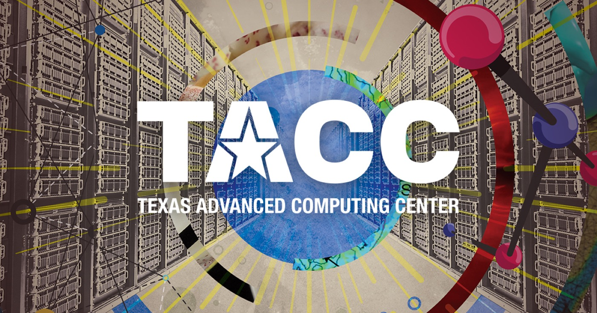

case study · in progress

Undergraduate Student Researcher · TACC Visualization Team
TACC K-12 CS Game
learning through play
- Role
- Design & research
- Timeline
- Jun 2026 – Present
The game is built for kids who come through on tours at the Texas Advanced Computing Center. They'll play it on iPads during their visit, and the goal is to see whether it increases their interest in computer science.
Over the summer we designed a restaurant-themed game where students play four different roles, each tied to a computer science concept — like variables, sorting, or data structures. Mid-role, a short tutorial video introduces the concept, then players return to the role with a harder version: a new rule or constraint that raises the difficulty.
We designed a character select screen, a waiting-for-players screen, a scoring system for each role, and a receipt screen at the end of each role that shows points earned and speed bonuses. We also mapped out error states for incorrect actions during gameplay. At game over, we highlight the team a player worked with and tie it back to pair programming: how working together on the same problem keeps the restaurant running, the same way pair programming works in computer science.
A lot of the design work was about making this feel like play rather than a lesson: keeping the language fun and simple while still teaching real concepts, and avoiding anything that felt like it was penalizing kids for getting something wrong.
The game design is finished. I'm now finalizing pre- and post-surveys and interview questions in Qualtrics and REDCap. The surveys establish a baseline for what students know and how they feel about computer science before playing, then measure how that changed after, including whether the tutorial videos helped them connect the concept to their role. Players are assigned anonymous IDs, and we're following up with interviews to dig into anything confusing about the gameplay or explanations.
“Does role-based gameplay increase CS interest in K–12 students?”
The research question driving this study
Roles & concepts · hover to flip
Timeline
Tools